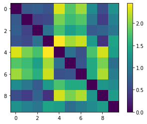

| Week 1 | Week 2 | Week 3 | Week 4 | Week 5 | Week 7 | Week 8 | Week 9 | Week 10 |
Using Jupyter Notebooks, I have generated a similarity matrix with a mix of genres. Tracks 0-3 are classical, 4-6 are rock tracks, track 7 is a psych-folk track, track 8 is a traditional Indian track & a pop/folk track for 9.
The music composition I decided to transcribe was the score I created in week 2, 'Chura Liya Hai.' I exported the wave fie on SonicVisualizer. I transformed it into a piano roll and exported this as a MIDI file. Below is a comparison of the original notated version, the first image, and the transcribed version from MuseScore, which is the second image.
Comparing the original composition with the transcribed version, it is clear that it is not very accurate.